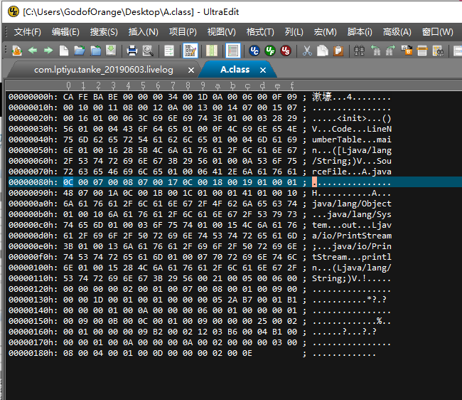

今天这Class文件看的我一脸懵圈。有种当初学PE时候的感觉了。
如果计算机的CPU指令集只有X86一种，操作系统也只有windows，那也许Java语言就不会出现。Java在诞生之初就提出一个非常著名的口号：一次编写到处运行。
Class文件是一组以8位字节为基础的二进制流，各个数据项目严格按照顺序紧凑地排列到Class文件中，中间没有添加任何分隔符，这使得整个Class文件种存储的内容几乎全部是程序与小的必要数据，没有空隙存在。当遇到需要占用8位字节以上的数据项时，则会按照高位在前低位在后的方式分割成若干个8位字节。
如果有做过逆向工程的朋友可能会知道，windows是小端存储，也就是高位在后，低位在前。
根据Java虚拟机规范的规定，Class文件格式采用一种类似于C语言结构体的伪结构来存储数据，这种伪结构中只有俩种数据类型：无符号数和表，后面的解析都要以这俩种类型为基础，所以这里要先介绍这俩个概念。
无符号数属于基本的数据类型，以u1,u2,u4,u8来分别表示1个字节，2个字节，4个字节和8个字节的无符号数，无符号数可以用来描述数字、索引引用、数量值或者按照UTF-8编码构成字符串值。
表是有多个无符号数或者其他表作为数据项构成的复合数据类型，所有表都习惯性的以“_info”结尾。表用于描述有层次关系的复合结构的数据，整个Class文件在本质上就是一张表，它由表6-1所示的数据项组成。
| 类型 | 名称 | 数量 |
|---|---|---|
| u4 | magic | 1 |
| u2 | minor_version | 1 |
| u2 | major_version | 1 |
| u2 | constant_pool_count | 1 |
| cp_info | constant_pool | constant_pool_count-1 |
| u2 | access_flags | 1 |
| u2 | this_class | 1 |
| u2 | super_class | 1 |
| u2 | interfaces_count | 1 |
| u2 | interfaces | interfaces_count |
| u2 | fields_count | 1 |
| field_info | fields | fields_count |
| u2 | methods | methods_count |
| method_info | methods | methods_count |
| u2 | attributes_count | 1 |
| attribute_info | attributes | attributes_count |
无论是无符号数还是表，当需要描述同一类型但数量不定的多个数据时，经常会使用一个前置的容量计数器加若干个连续的数据项的格式，这时称这一些列连续的某一类型的数据为某一类型的集合。
每个class文件的头4个字节都叫魔数
如下所示

它的唯一作用是确定这个文件是否为一个能被虚拟机接受的class文件。很多文件存储标准中都使用魔数来进行身份识别。
紧跟着4个字节存储的是Class文件的版本号：第5和第6字节是次版本号，第7第8个字节是是主版本号。
Java版本号是从4，5开始的，JDK1.1以后的每个JDK大致版本都+1.高版本的JDK能向下兼容以前的Class文件，但不能运行以后版本的Class文件。
紧接着主版本号之后的是常量池入口，常量池可以理解为Class文件中的资源仓库，它是Class文件结构中与其他项目关联最多的数据类型，也是占用Class文件空间最大的数据项目之一。同时也是在Class文件中第一个出现的表类型数据项目。
由于常量池中常量的数量是不固定的，所以在常量池入口需要放置一项u2类型的数据，代表常量池容量计数器。与Java中语言习惯不一样的是，这个容量是从1开始的。
常量池中主要存放俩大类常量：字面量和符号引用，字面量比较接近于Java语言层面的常量概念，如文本字符串，声明为final的常量值等。而符号引用则属于编译原理方面的概念，包含了下面三类常量：
Oracle公司已经为我们准备好一个专门用于分析class文件字节码的工具：javap，